Riboswitches
Structures in 5’ UTRs of mRNAs that bind to small molecule metabolites
Regulation of transcription termination
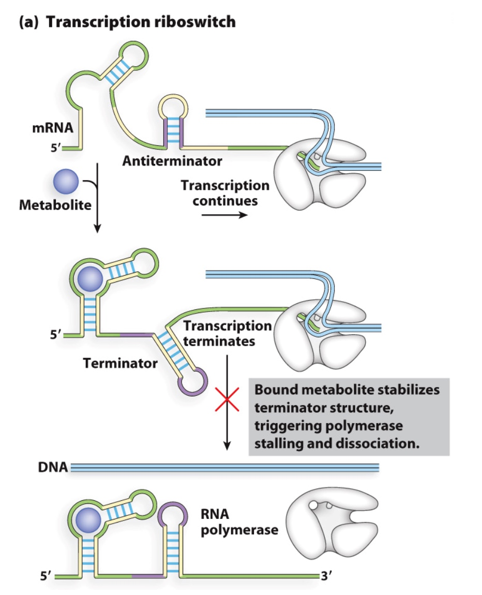
The terminator will knock off the RNA polymerase
Regulation of Translation Initiation
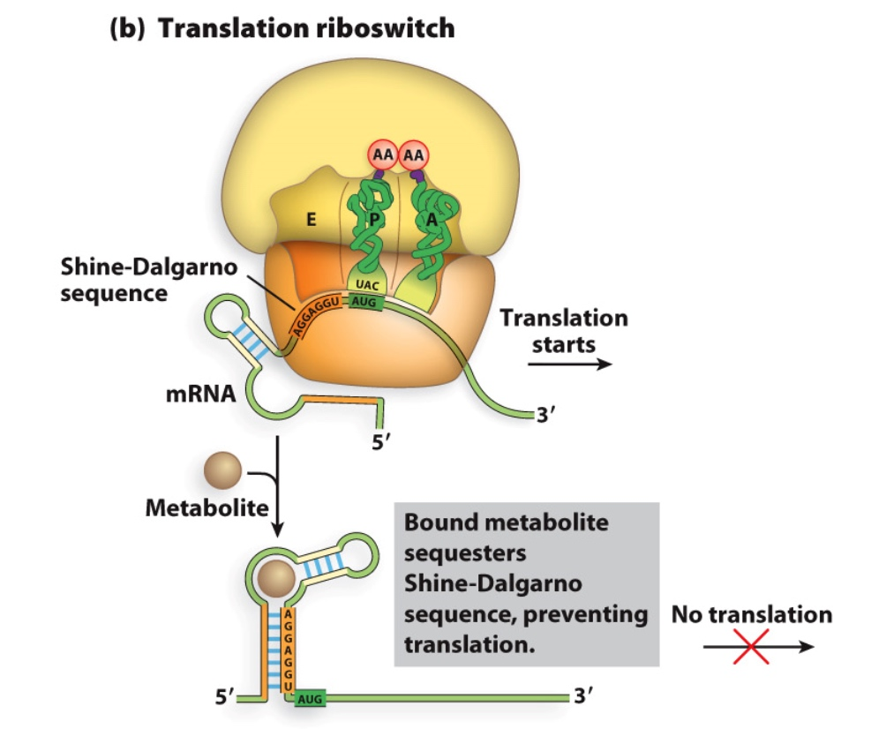
Poll Everywhere synthesis question:
Can transcriptional attenuators exist in eukaryotes?
- A. Yes
- B. No
Transcription is in nuclear and translation is in cytoplasm.
Poll Everywhere synthesis question:
Can riboswitches exist in eukaryotes?
- A. Yes
- B. No
- C. My answer depends on the type of riboswitch
Advanced Gene Expression Regulation | Examples in Eukaryotes
Eukaryotes developed a lot more mechanisms to oregulate gene expression.
How is regulation of gene expression different in eukaryotes?
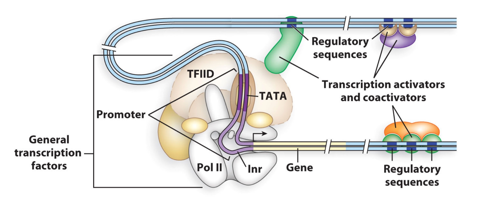
- Chromatin
- Regulation at a distance
- More points of transcriptional control (a lot more factors take part in this process.)
- mRNA processing
- RNA interference
Eukaryotes have more points of control
- Basal transcription factors (e.g. TBP, part of TFIID complex)
- Different combinations of general transcription factors, transactivators and coactivators
- HMG = High mobility group proteins loop DNA
- Mediator is one of possible coactivator complexes.
- Repressors interfere with communication between Pol II and transactivators or between transactivators and activators
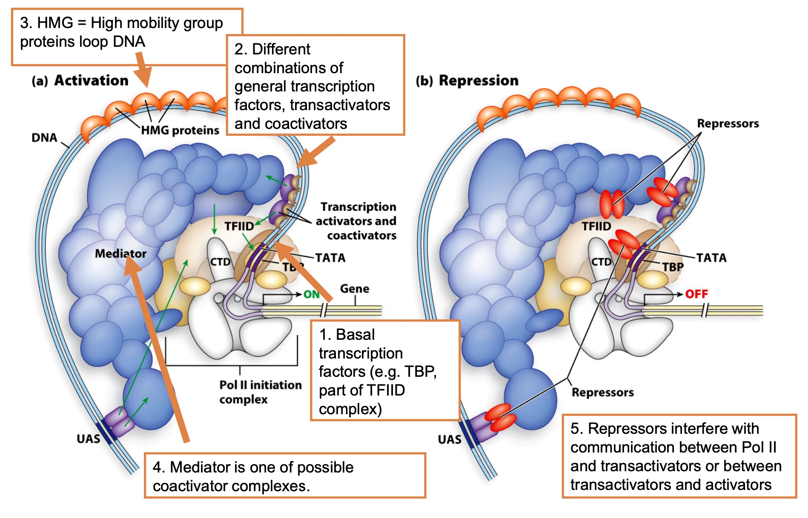
Chromatin!
- About 90% of the chromatin in a eukaryotic cell; Transcriptionally inactive
- Transcriptionally active; Contain hypersensitive sites (to Dnase I digestion) that sometimes correspond to the binding sites for regulatory proteins
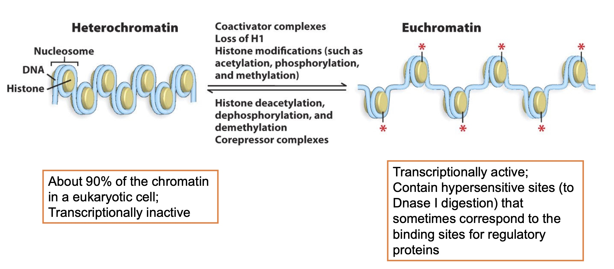
Chromatin can be remodeled to impact gene expression
Activators can recruit transcription factors AND chromatin remodeling proteins
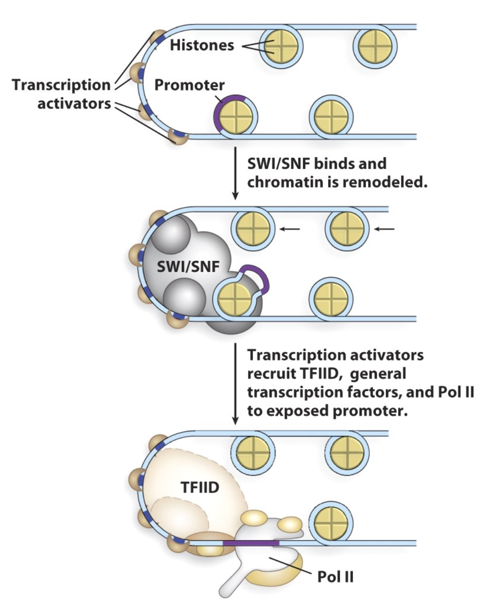
Example: Regulation of Transcription Initiation
Complex control of galactose metabolic genes in yeast
GAL1 expression is repressed when glucose is present
- When glucose is absent:
- Mig1 is unphosphorylated and is in cytoplasm
- When glucose is present:
- Mig1 is phosphorylated and moves to the nucleus
- In the nucleus Mig1 binds near GAL promoter
- Mig1 recruits Tup1
- Tup1 blocks transcription initiation
- Tup1 also recruits HDACs
GAL1 transcription is controlled by the Gal4 activator
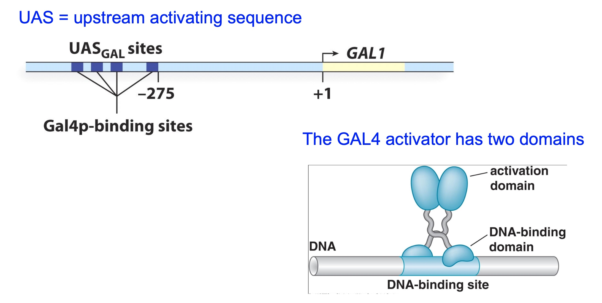
The Gal80 protein regulates Gal4 activity
Gal80 binds to Gal4 and represses it: co-repressor
Gal3 binds to both ATP and galactose and interacts with Gal80 --> relieves inhibition of Gal4
repressor of repressor = activator
Gal3 now is the co-activator. It needs glucose to take effect.
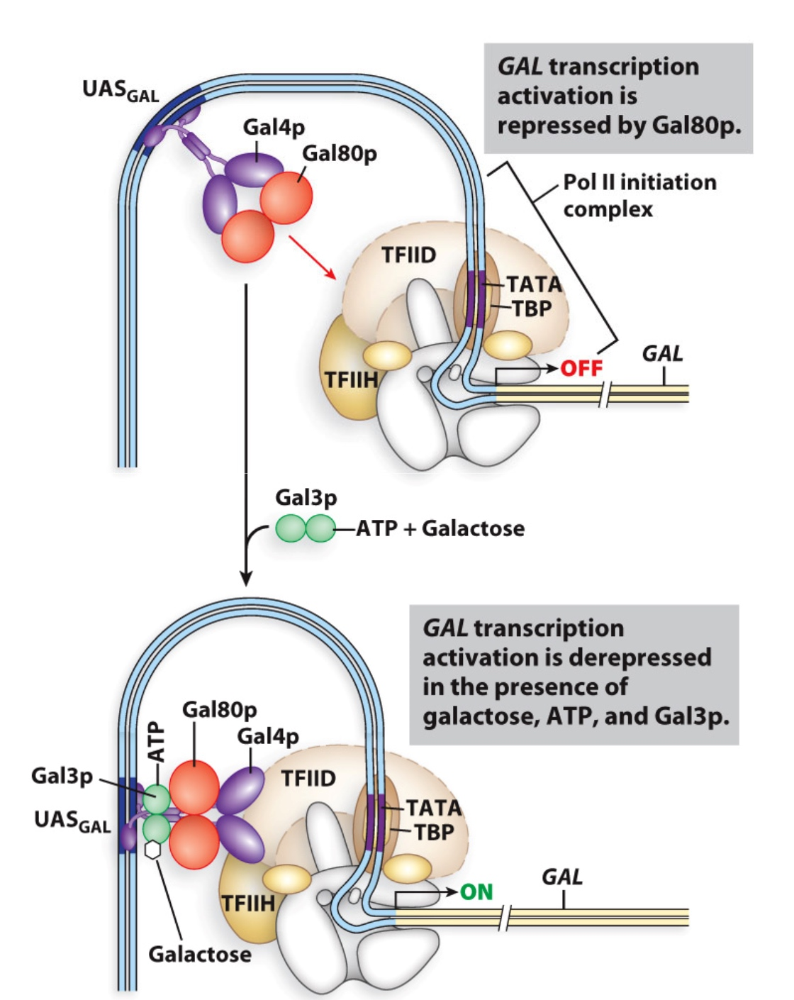
Combinatorial control of yeast GAL genes
Logic:
Transcribe GAL genes when galactose is present and glucose is absent
This is the same logic as in the bacterial sugar metabolism operons, just with more players
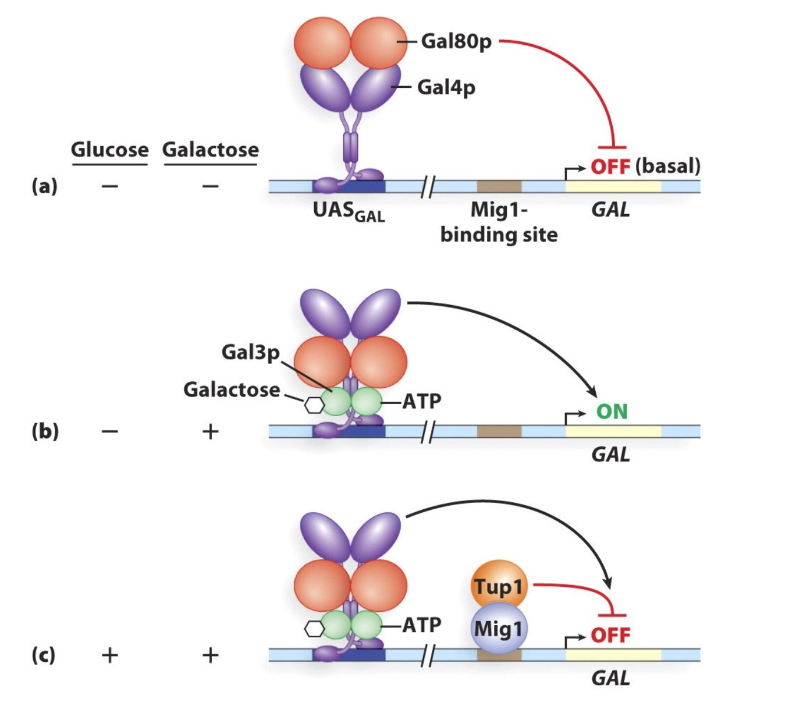
Poll Everywhere analysis question:
Which of the following mutations would prevent high levels of GAL1 transcription in cells growing in media with lots of galactose?
- A. A nonsense mutation in the GAL80 gene
- B. A deletion of the GAL4 gene
- C. A mutation that renders the Gal3 protein unable to bind to galactose
- D. A mutation that drastically changes the UASGAL consensus sequence
- E. A mutation in the Gal4 protein that abolishes its interaction with Gal80
Gal80: repressor
Gal4: activator
Gal3: activator
The Gal4 activator has DNA-binding and activation domains
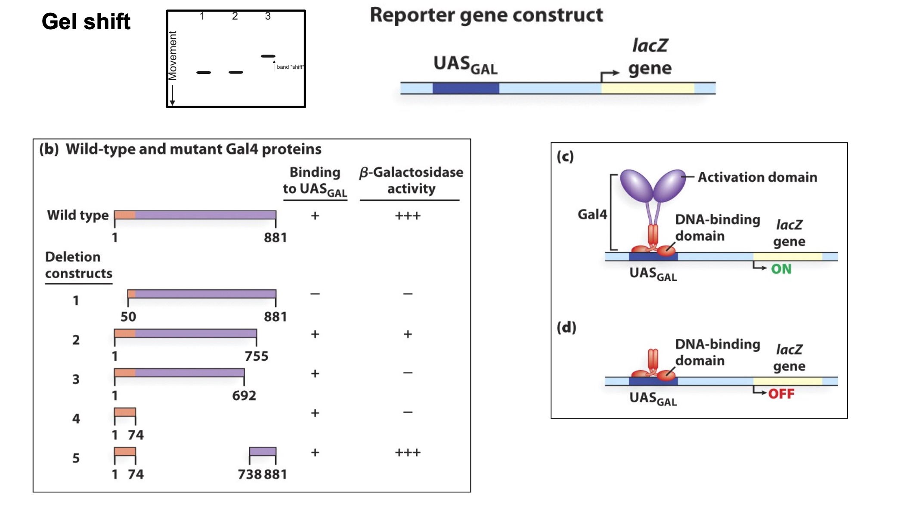
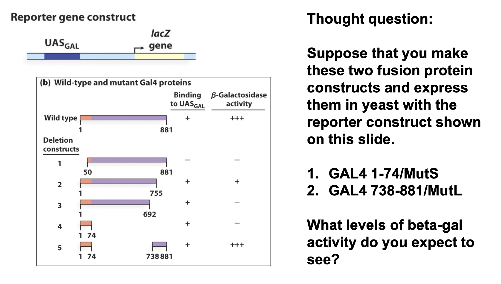
High level.
The Yeast 2-hybrid System
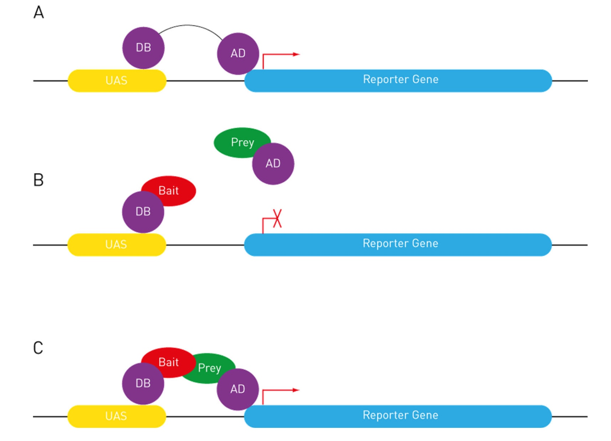
We use the UAS-GAL4 system in other organisms, too
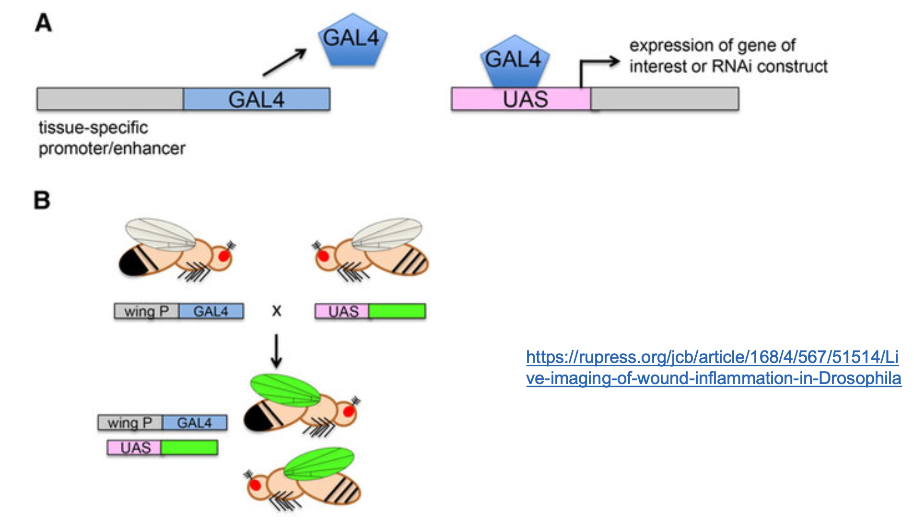